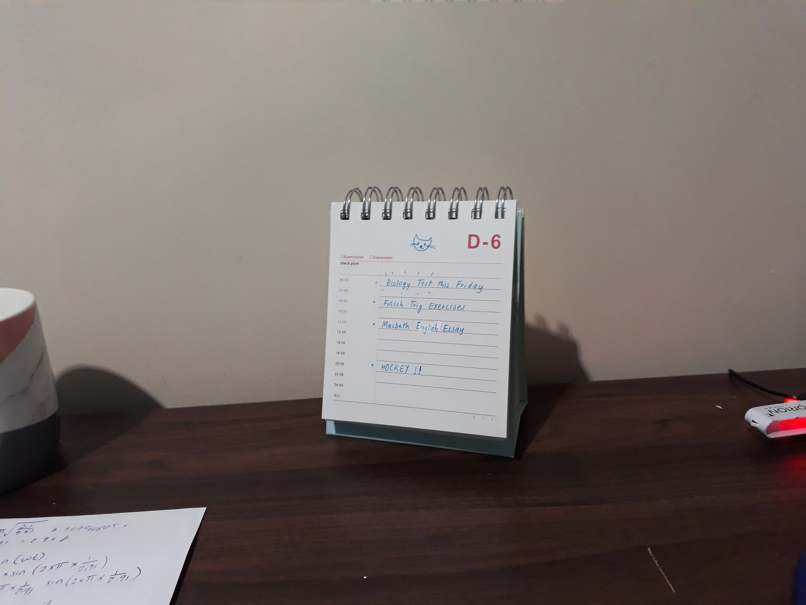

~ EXPERIENCES ~

Find out what it's like to be in high school! Seven current Year 9 students have kindly shared advice and tips that allowed them to balance their academics with extra-curricular activites and their social lives. Discover what parts of high school they found interesting, challenges they faced and how they overcame them.